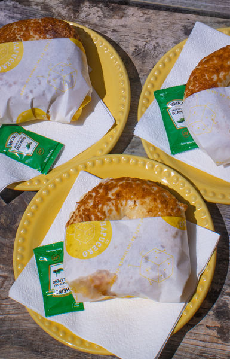
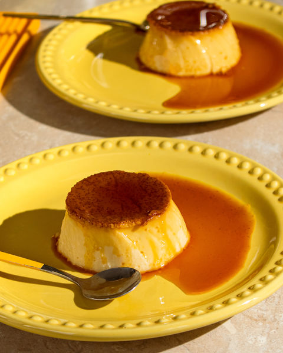
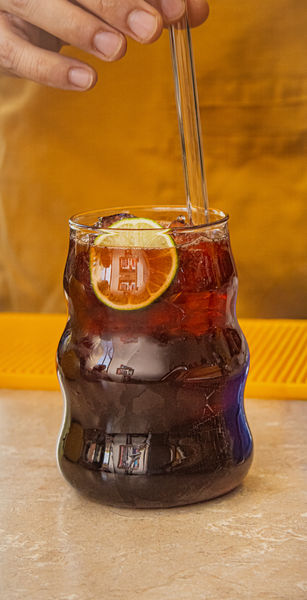
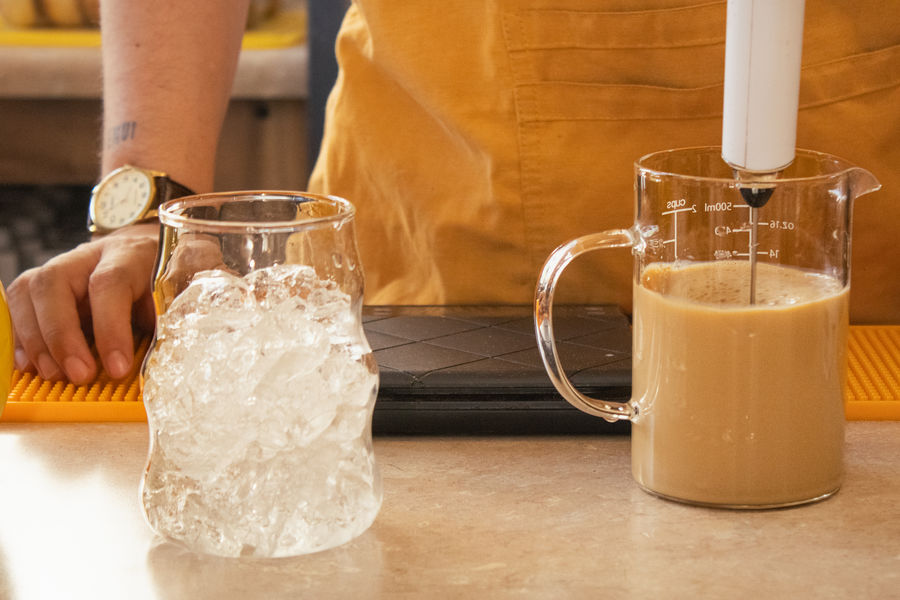
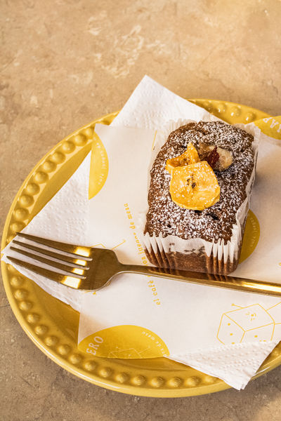
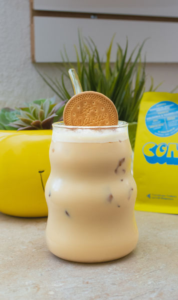

← Volver a Galería
Editorial & Producto
Pequeños proyectos y trabajitos con lugares que me gusta mucho visitar. ¡Recuerda poner el cursor sobre las fotos para apreciarlas mejor!
Pequeños proyectos y trabajitos con lugares que me gusta mucho visitar. ¡Recuerda poner el cursor sobre las fotos para apreciarlas mejor!
Mis amigas y yo fuimos solicitadas para tomar ciertas fotografías para el café y otras fueron tomadas como recuerdo personal, pero al verlas les gustaron tanto que me pidieron permiso para usarlas en sus redes. Fue la primera vez que trabajé para alguien más.












Fuimos a desayunar, pero yo siempre cargo mi cámara a cualquier lugar, subí las fotos que tomé y el café me contactó para usarlas en sus redes!